| 日付 | 2018年4月1日（日） |
|---|---|
| 山域 | 奥武蔵 |
| メンバー | 家族（妻、長女・7歳、長男・4歳） |
| 山行形態 | 子連れ日帰り |
| アクセス | 車 |
| ルート (Map) | さわらびの湯バス停 (8:24) - (8:54) 登山口 - (9:52) 林道 (10:00) - (10:13) 岩茸石 - (10:45) 棒ノ折山 (12:05) - (12:30) 岩茸石 - (12:58) 飛行機操縦櫓 (13:07) - (14:16) さわらびの湯バス停 |
スキーなどに行っていて長い間山はご無沙汰だった。
季節はすっかり春になり、色んな山に行けるようになったので、
2か月振りに山に行くことにする。
今回はリハビリ登山という事で、きつすぎず軽すぎずの山を選択。
8年振りに棒ノ折山に行くことにする。
さわらびの湯バス停の近くの駐車場に車を停める。標高255m。
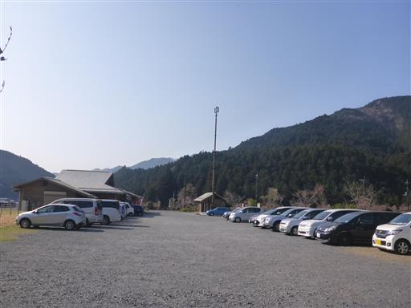
駐車場からしばらく車道を登ると有馬ダムが見えてくる。
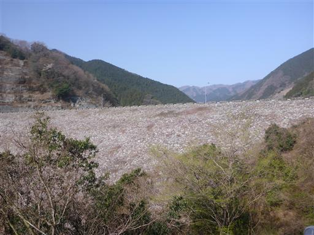
有馬ダムに到着。
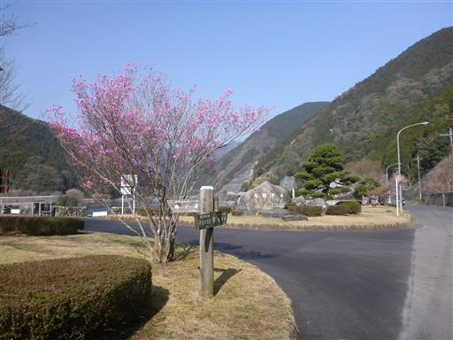
比較的小さなダムだがツーリングで訪れている人が多い。
日の光を反射して地面がきらきら光っている。
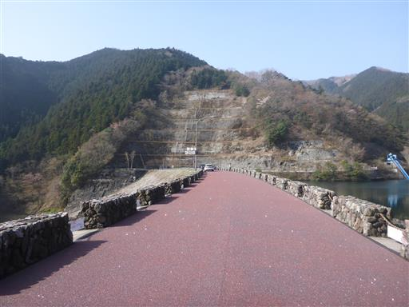
ダムからさらに車道を歩いて登山口を目指す。
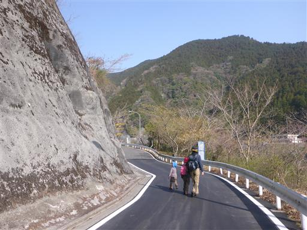
美しい桜が咲いているが、フェンスがあって中に入れないようになっている。
何のために桜を植えたのか…
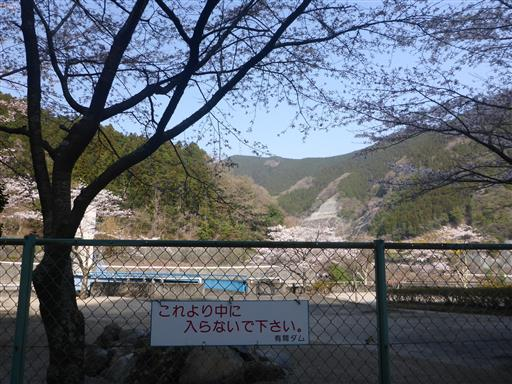
登山口に到着。この近くにも何台か車が停まっているが、
ここに車を停めると周回コースを歩けない。
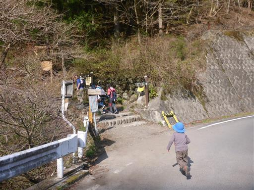
最初は杉の植林地帯を登って行く。子供たちは花粉症気味なので少し心配だ。
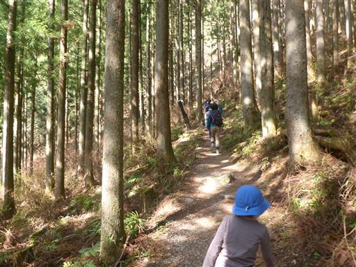
左側はかなりの急斜面。
難易度は高くないが、沢沿いの登山道を歩くため、それなりに危険はある。
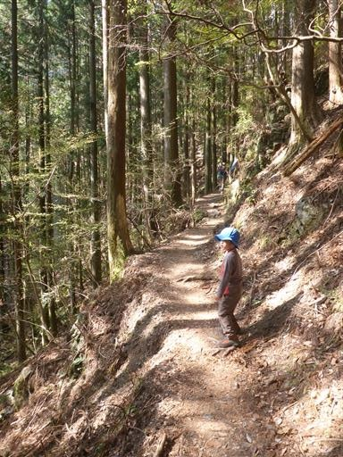
木の根を乗り越えていく。久々の登山だがペースは快調だ。
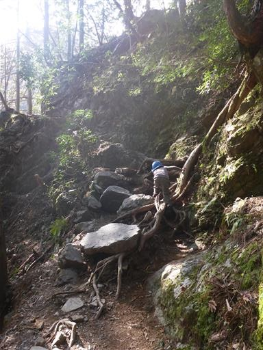
藤懸の滝。小さな滝だが形が独特だ。
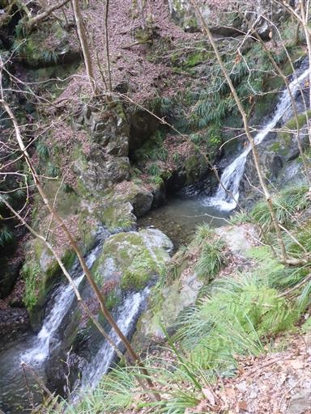
沢を何度か渡りながら進んでいく。
息子は石の上を選んで歩いていくのが少々苦手だ。
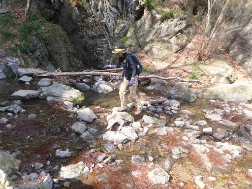
両側に現れる大岩。この間を抜けていく。
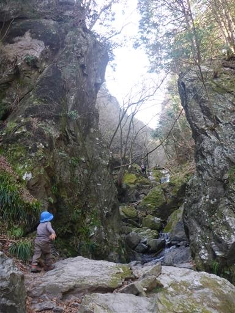
沢を超える場所は手を繋ぐ。
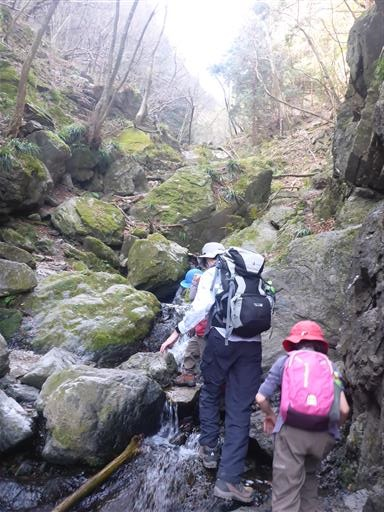
滝のすぐそばを登る。爽快な登山道だ。
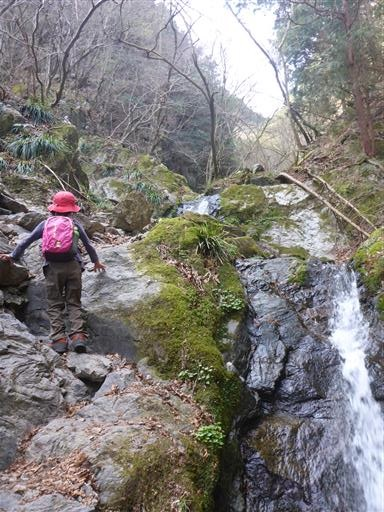
本コースのハイライト、ゴルジュを通過する。
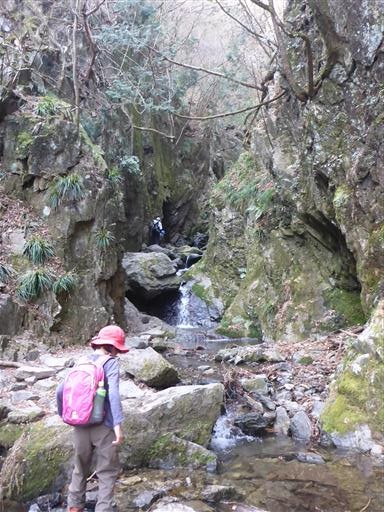
これほど気軽に美しい沢の中を歩ける登山道を他に知らない。
何度来ても楽しい登山道だ。
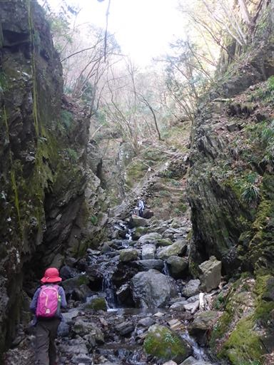
ゴルジュを抜けたら急斜面の岩場を登って行く。
歩きやすいよう石が積まれていて鎖もあるので、あまり危険はない。
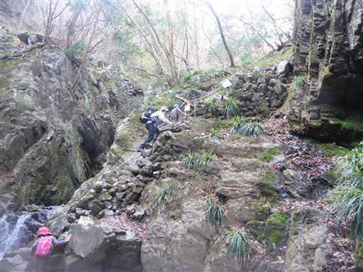
白孔雀の滝。
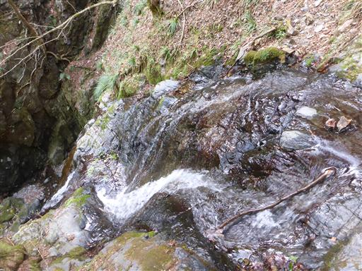
沢登りもそろそろ終盤。
最後にロープを掴んで大きな岩を乗り越える。
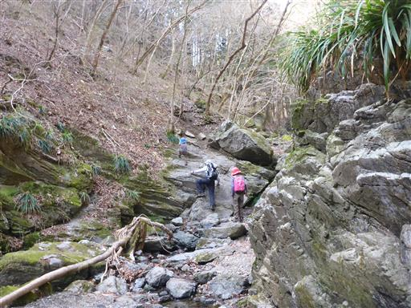
林道に到着。ここから山頂まではまだ結構距離があるため、ここで一休み。
ここにあった東屋はいつの間にか撤去されている。
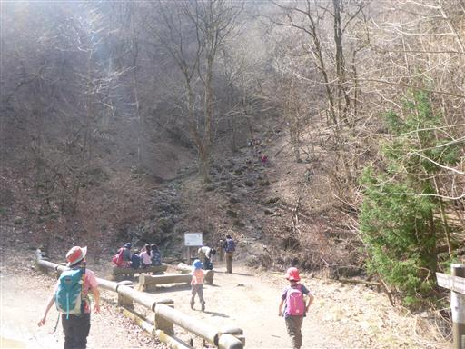
ここからは沢を離れて普通の登山道になる。
周囲の木々は芽吹き直前で薄らとした黄緑色だ。
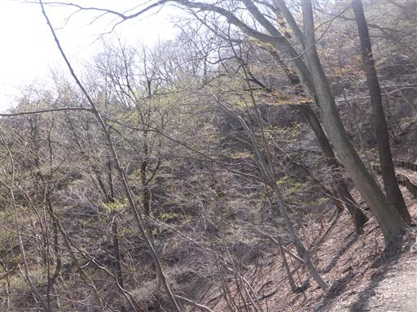
カタクリの花がポツリと咲いている。
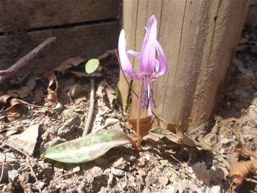
岩茸石に到着。
岩に登っている人がいたので、子供たちもすぐに岩に登り始める。
帰りに登ろうと声をかけたが無駄だった。
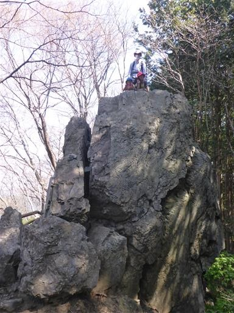
ここからしばらくの登山道は階段が崩壊している。
登山というよりアスレチックだ。
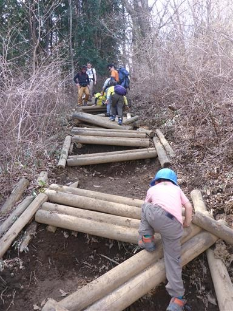
権次入峠に到着。良い休憩スペースだが、山頂までもうすぐなのでここは通過。
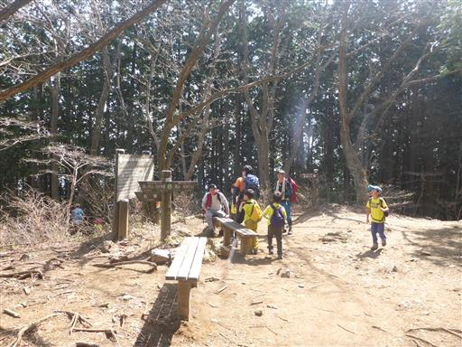
尾根上のコースは植生回復のため閉鎖されていて、
左の植林地帯の中に迂回ルートがつけられている。
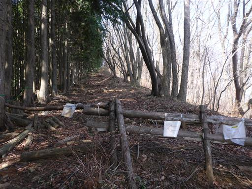
棒ノ折山山頂に到着。標高969m。
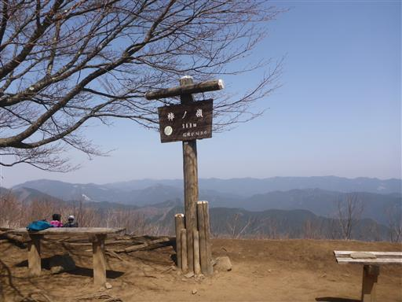
山頂はかなり広いため、多くの登山者がいてもそれほど気にならない。
思ったよりも早く到着したため、ゆっくりと昼食休憩をとる。
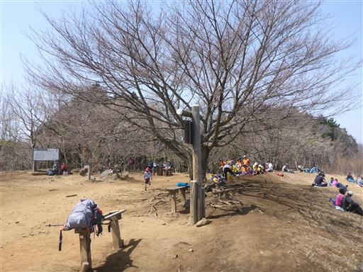
晴れてはいるが、春霞で展望はぼんやり。
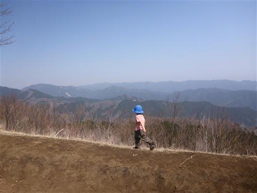
昼食をとったら下山開始。
娘は丸太の上をテンポよく歩いている。
息子は登りはできても下りはまだ難しいようだ。

岩茸石に着いたら、また岩に登り出す。
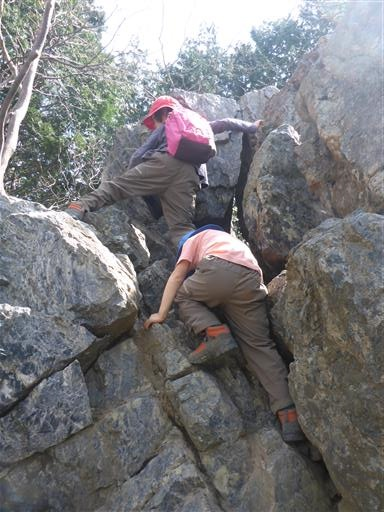
上に登るとそれなりに高度感がある。

岩茸石からは登りのルートから分かれて、別ルートを下る。
何回か林道を横切る。
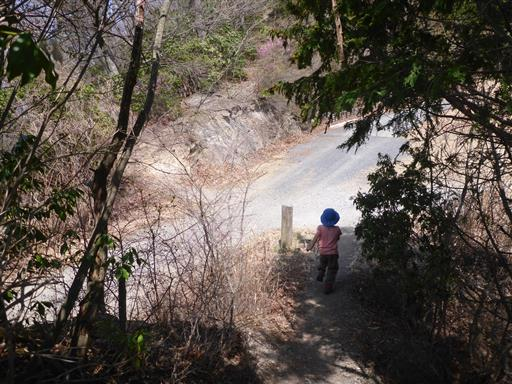
展望台らしきものが見えたので息子は走り出す。
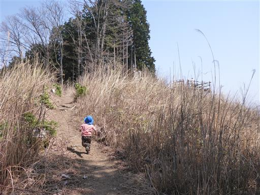
展望台ではなく飛行機の操縦場所だった。
羽の向きは制御しているが推進力は無く、風の力で飛ばしているらしい。
操縦用の櫓を造るなど、なかなか贅沢な遊びだ。

階段が砂に埋まって、かなり滑りやすい斜面になっている。
ロープを設置するのではなく、スコップで土を取り除いてほしい。
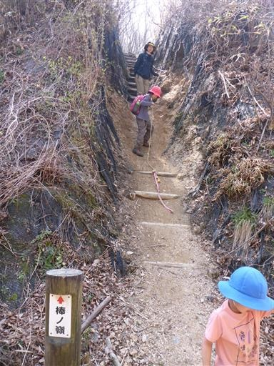
ここからは植林地帯の中をジグザグに下っていく。
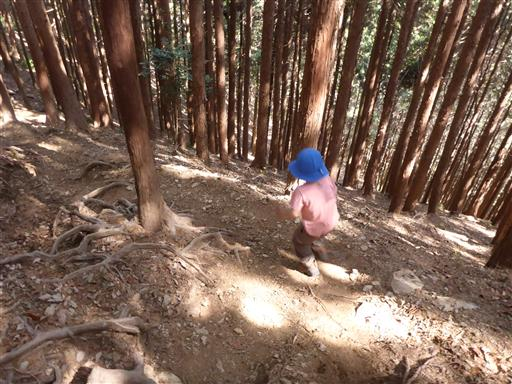
足元にイワウチワの花が咲いている。

こちらはツツジ。山の中にも春が訪れている。
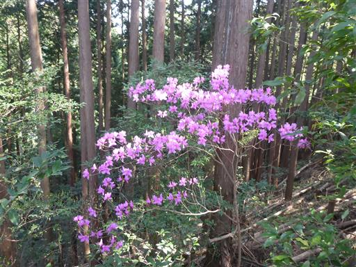
下山。この辺りはちょうど桜が満開だ。
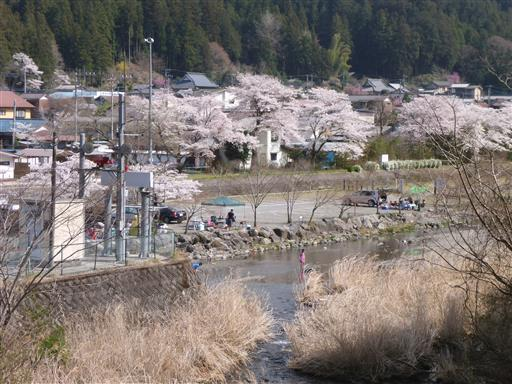
最後に少し斜面を登って駐車場に到着。
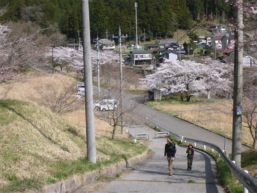
お休み処やませみで饅頭を買って一息つく。
棒ノ折山は比較的軽い山だが、なまった体にはちょうど良い負荷だった。
リハビリを終えて、次回はもう少しハードな山に登ってみようと思う。
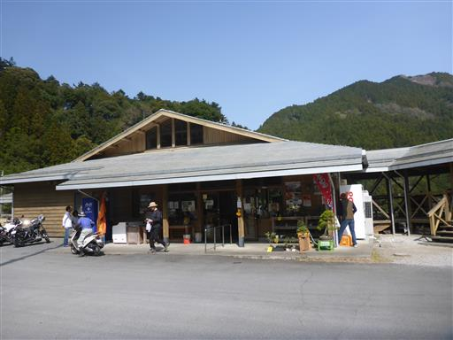